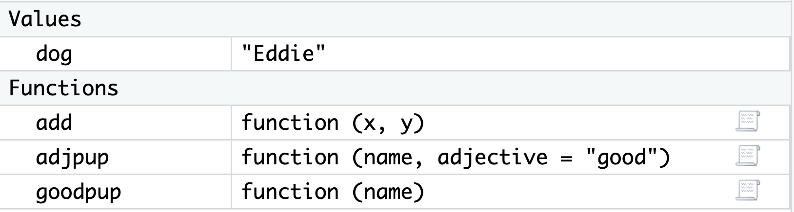

This week, we’re going to learn about how we can write our own user-defined functions in R. We’re going to start with writing functions that operate on vectors.
By the end of the week, you should have a grasp of: + Writing your own functions in R
Making good decisions about function arguments and returns
Including side effects and / or error messages in your functions
The differences between vectorized and non-vectorized functions
📖 Required Readings: 60 min
Much of the content here comes from Dr. Allison Theobold’s nice writing for this class.
2 Why Write a Function?
You might be coming into this chapter wondering, “Why would I write a function?”. Especially, if thus far you’ve been able to do everything with built-in functions and / or reusing your code a few times.
The critical motivation behind functions is the “don’t repeat yourself” (DRY) principle. In general, “you should consider writing a function whenever copied and pasted your code more than twice (i.e. you now have three copies of the same code)” (Wickham & Grolemund, 2020).
Best Practices for Scientific Computing (Wilson et al, 2014), summarizes this idea in a slightly different way:
Anything that is repeated in two or more places is more difficult to maintain. Every time a change or correction is made, multiple locations must be updated, which increases the chance of errors and inconsistencies. To avoid this, programmers follow the DRY (Don’t Repeat Yourself) Principle, which applies to both data and code.
The DRY Principle applies at two scales: small and large. At small scales, researchers (you) should work to modularize code instead of copying and pasting. Modularizing your code helps you remember what the code is doing as a single mental chunk. This makes your code easier to understand, since there is less to remember! Another perk is that your modularized code can also be more easily re-purposed for other projects. At larger scales, it is vital that scientific programmers (you) re-use code instead of rewriting it (Wilson et al., 2014).
This reading goes over the basics of user-written functions in R. I want to go over a couple of additional trickier points as well.
3.1 Input Validation
When you write a function, you often assume that your parameters will be of a certain type. But you can’t guarantee that the person using your function knows that they need a certain type of input. In these cases, it’s best to validate your function input. The idea here is that it is better for you to validate the input first and supply an error with a helpful error message, rather than let an error occur within the mechanics of your function. You want your function to work as long as the correct things are being supplied!
The heart of input validation are two functions—stopifnot() and stop(). While these functions have similar behavior, they have rather different syntax. When you are doing more advanced function writing, there could be compelling reasons to use one over the other, but for this course, you can just choose which you prefer.
Before we explore these differences, let’s do a refresher on conditional statements and learn about the if(), else(), and else if() functions in R.
In R, you can use stopifnot() to check for certain essential conditions.
add <-function(x, y) { x + y}add("tmp", 3)
Error in `x + y`:
! non-numeric argument to binary operator
add <-function(x, y) {stopifnot(is.numeric(x), is.numeric(y) ) x + y}add("tmp", 3)
Error in `add()`:
! is.numeric(x) is not TRUE
add(3, 4)
[1] 7
You can also privide a specific error message for users:
add <-function(x, y) {stopifnot("argument input for x is not numeric"=is.numeric(x), "argument input for y is not numeric"=is.numeric(y) ) x + y}add("tmp", 3)
Error in `add()`:
! argument input for x is not numeric
That’s a lot more helpful than is.numeric(x) is not TRUE!
stop() provides a slightly easier way to provide a helpful error message. It needs to be combined with an if(){} or if(){ } else{ } statement.
add <-function(x, y) {if(!is.numeric(x) |!is.numeric(y)) {stop("Argument input for x or y is not numeric") } x + y}add("tmp", 3)
Error in `add()`:
! Argument input for x or y is not numeric
add(3, 4)
[1] 7
3.2 Arguments
You get to decide what the arguments to your function are called, what order they are in, and whether they should be required or not.
Argument Names
You should always give your arguments concise, descriptive names. A user should be able to tell what the arguments to your function mean, and at the same time, you will be writing all of your function body with those arguments, so making them too long will be annoying!
Argument Order
When you have many arguments to a function, the order does not matter, although it is convention to put the “main” arguments first and optional arguments later. As long as you name arguments when you run the function, it doesn’t matter what order they were in when the function was written!
Required versus Optional Arguments
You should have noticed throughout the class that for some functions, we sometimes use certain arguments and other times we don’t. For example, we have used mean(x) and mean(x, na.rm = T). This is because arguments to a function can be optional. To make an argument optional, a default value must be provided when the function is first defined.
Let’s write a function that takes a puppy’s name and returns "<name> is a good pup!".
goodpup <-function(name) {paste(name, "is a good pup!")}
The argument name is a required argument since no default value is provided. If we try to run the function without providing a value for name, we will get an error:
goodpup()
Error in `goodpup()`:
! argument "name" is missing, with no default
We can edit and add an optional argument to this function by adding an argument that takes a default value.
Or leave out the adjective argument and the default "good" will be used.
adjpup(name ="Baxter")
[1] "Baxter is a good pup!"
3.3 Functions, Environments, and Scope
As we learned early in the quarter, variables that you create in R using assignment <- are then available in your Global Environment. This is true of functions too! User-defined functions show up in their own part of your Global Environment window in RStudio:

While the function itself is saved in the Global Environment, when you actually run a function, the variables you create and manipulate inside the function will not be added to your Global Environment. Instead, they exist in a local environment that only exists for the function call. Let’s look at an example to make this more concrete.
Speficially, let’s take a closer look at what is going on “under the hood” with our goodpup() function. The function goodpup() has one argument called name. Each time we run the function, we can pass in different values for that argument.
Here we have saved, separately, a variable dog that takes the value "Eddie". What is happening inside the computer’s memory as goodpup(dog) runs?
dog <-"Eddie"goodpup <-function(name) {paste(name, "is a good pup!")}res <-goodpup(name = dog)res
[1] "Eddie is a good pup!"
A sketch of the execution of the program goodpup, showing that name is only defined within the local environment that is created while goodpup is running. We can never access name in our global environment.
The variable name never exists in our Global Environment, just in the temporary function environment. We also need to explicitly assign the outpu of the function res to add the result to our Global Environment.
Scope
Scope refers to a set of rules that determines how R looks up the value of a variable. This can get quite complicated, but there is just one rule that we need to keep in mind for now!
Within a function, R will first look for a name (variable) within the local function environment. If that name isn’t defined within a function, it will look one level out, into the Global Environment.
What this means is that you can run into issues or get unexpected results if there is name masking. Name masking occurs when you use the same variable name inside and outside a function. Note that this is 1) bad programming practice, and 2) fairly easily avoided if you can make your names even slightly more creative than a, b, and so on.
Here we have a variable a in both the global environment and the function call.
a <-10myfun <-function() { a <-20 a}myfun()
[1] 20
But remember that since everything within a function happens in a temporary local environment, the variable a still has the value 10 in the Global Environment:
a
[1] 10
Here we accidentally forgot to include x as an argument to our function, so the variable x does not exist in our actual function call.
myfun <-function() {mean(x)}myfun()
Error in `myfun()`:
! object 'x' not found
However, if we happend to have x saved in our Global Environment, the function will run, with that value of the variable.
x <-10myfun()
[1] 10
Hopefully these examples convinced you that name masking is very bad practice and will result in errors and weird results! It is always good to clear your Global Environment before testing functions.
Note
These are tricky concepts – I don’t expect that they will all be clear immediately! As you start to work more with functions, these will make more sense.
References:
Wilson G, Aruliah DA, Brown CT, Chue Hong NP, Davis M, Guy RT, et al. (2014) Best Practices for Scientific Computing. PLoS Biol 12(1): e1001745. https://doi.org/10.1371/journal.pbio.1001745
![The image illustrates the concept of function environments versus the global environment in R. It starts by showing a variable dog in the global environment, set to 'Eddie', and a function goodpup defined as function(name) { paste(name, 'is a good pup!') }. When res <- goodpup(dog) is called, the function creates a temporary local environment where the variable name is assigned the value 'Eddie'. The paste function combines name with the string 'is a good pup!, returning 'Eddie is a good pup', which is then stored in res in the global environment. The image emphasizes that the local environment of the function only exists during the function call. The variable name is never defined in the global environment, meaning it cannot be accessed outside of the goodpup function. Annotations highlight that variables in the global environment, such as dog and res, are accessible globally, while local variables, like name, are temporary and exist solely within the function’s scope.](images/07-function_argument_parameters.png)